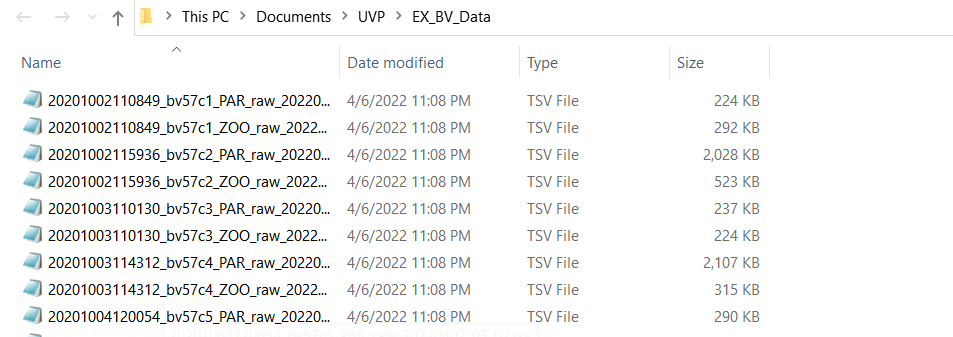

Importing UVP Data From Ecopart Export
The first step to importing ecopart data is to guarantee that you exported the data correctly from ecopart. Follow those instructions here.
The next step is to import your into R for analysis.
The exported files should all be in a single directory: 
For this tutorial, I provided data in the package from AE1917. This is intended for examples only and not for research use. This data is stored as ecopart_example and is available throught the package
Importing the data:
Using the r function
ecopart_import()assign the one argument of a path to the directory of your filesAssign the files to a list object. By using
ecopart_import(), the imported files will be anecopart_objclass structure. This class structure is defined by having three elements; (1) apar_listwhich has multiplepar_dffiles; (2) azoo_listwhich has multiplezoo_dffiles
dir_path <- system.file('extdata','ae1917_example-data',
package = 'EcotaxaTools') #This should be your directory location
ecopart_list <- ecopart_import(dir_path) #load filesWarning in names(par_files) != names(zoo_files): longer object length is not a
multiple of shorter object lengthWarning in ecopart_import(dir_path): The par_files and zoo_files don't exactly
match- This will create a three element list which can be used in analysis built into EcotaxaTools. This object is an
ecopart_objclass. Review the class system here“par_files” - a list of tibbles with each particle file
“zoo_files” - a list of tibbles with each plankton image file (classic tsv)
“meta” - a tibble with the meta
Understanding the ecopart file list
If you are new to working with lists, it’s worth reading a bit about them. While lists can be clunky, it allows for looping over large amounts of data stored in memory.
Below, I’ll briefly show how to interact with some of the data stored in the ecopart list
Looking at zooplankton data
Zooplankton data are stored in tibbles in the list “zoo_files”. You can access elements of a list using the $ operator or by indexing the ‘bare’ elements with [[ index operator. The names of the zoo_files correspond to the particular casts of a project.
#all below with index the names files
names(ecopart_list$zoo_files) [1] "bats361_ctd1" "bats361_ctd2" "bats361_ctd3" "bats361_ctd4"
[5] "bats361_ctd5" "bats361_ctd6" "bats361_ctd7" "bats361_ctd8"
[9] "bats361_ctd9" "bats361_ctd12" "bats361_ctd13" "bats361_ctd14"
[13] "bats361_ctd15" "bats361_ctd16" "bats361_ctd17" "bats361_ctd19"
[17] "bats361_ctd20" "bats361_ctd21" "bats361_ctd22" "bats361_ctd23"
[21] "bats361_ctd24" "bats361_ctd25" "bats361_ctd26" "bats361_ctd27"names(ecopart_list[["zoo_files"]]) [1] "bats361_ctd1" "bats361_ctd2" "bats361_ctd3" "bats361_ctd4"
[5] "bats361_ctd5" "bats361_ctd6" "bats361_ctd7" "bats361_ctd8"
[9] "bats361_ctd9" "bats361_ctd12" "bats361_ctd13" "bats361_ctd14"
[13] "bats361_ctd15" "bats361_ctd16" "bats361_ctd17" "bats361_ctd19"
[17] "bats361_ctd20" "bats361_ctd21" "bats361_ctd22" "bats361_ctd23"
[21] "bats361_ctd24" "bats361_ctd25" "bats361_ctd26" "bats361_ctd27"names(ecopart_list[[2]]) [1] "bats361_ctd1" "bats361_ctd2" "bats361_ctd3" "bats361_ctd4"
[5] "bats361_ctd5" "bats361_ctd6" "bats361_ctd7" "bats361_ctd8"
[9] "bats361_ctd9" "bats361_ctd12" "bats361_ctd13" "bats361_ctd14"
[13] "bats361_ctd15" "bats361_ctd16" "bats361_ctd17" "bats361_ctd19"
[17] "bats361_ctd20" "bats361_ctd21" "bats361_ctd22" "bats361_ctd23"
[21] "bats361_ctd24" "bats361_ctd25" "bats361_ctd26" "bats361_ctd27"Each zooplankton tibble has data from all vignettes collected from an individual uvp cast. You can access these in multiple ways with either the $ operator or [[ operators. These are very similar to the export data from standard Ecotaxa .tsv files. However, in an ecopart_obj, the metadata is stored separated (in the meta file). Not to worry, most EcotaxaTools functions will handle the metadata independently!
ecopart_list$zoo_files[[3]]# A tibble: 626 × 90
orig_id objid name taxo_hierarchy classif_qual depth_including… psampleid
<chr> <dbl> <chr> <chr> <chr> <dbl> <dbl>
1 bats361_… 1.46e8 detr… not-living>de… V 619. 33981
2 bats361_… 1.46e8 Aulo… living>Eukary… V 379. 33981
3 bats361_… 1.46e8 badf… not-living>ar… V 54.1 33981
4 bats361_… 1.46e8 Aulo… living>Eukary… V 420. 33981
5 bats361_… 1.46e8 tuff living>Bacter… V 104. 33981
6 bats361_… 1.46e8 fibe… not-living>de… V 124. 33981
7 bats361_… 1.46e8 detr… not-living>de… V 117. 33981
8 bats361_… 1.46e8 badf… not-living>ar… V 115. 33981
9 bats361_… 1.46e8 Aula… living>Eukary… V 543. 33981
10 bats361_… 1.46e8 detr… not-living>de… V 282. 33981
# … with 616 more rows, and 83 more variables: `%area` <dbl>, angle <dbl>,
# area <dbl>, area_exc <dbl>, areai <dbl>, bx <dbl>, by <dbl>, cdexc <dbl>,
# centroids <dbl>, circ. <dbl>, circex <dbl>, compentropy <dbl>,
# compm1 <dbl>, compm2 <dbl>, compm3 <dbl>, compmean <dbl>, compslope <dbl>,
# convarea <dbl>, convarea_area <dbl>, convperim <dbl>,
# convperim_perim <dbl>, cv <dbl>, elongation <dbl>, esd <dbl>, fcons <dbl>,
# feret <dbl>, feretareaexc <dbl>, fractal <dbl>, height <dbl>, …Looking at particle data
Particle data are stored in par_df tibbles for each cast. For a project, they will all be stored in the par_files element of the ecopart_obj list. Similar to the zoo_files, the names of the par_files correspond to the individual casts.
A single par_df has 7 columns. The data here are presented in 1-m aggregate bins. Each row then is a 1-m depth bin with information about a single particle size class. Here are columns explained in detail: - The ‘depth’ column indicates the depth bin - The ‘imgcount’ column is the number of images taken in that depth bin (this is needed for volume sampled calculations) - The ‘area’ column indicates particle size as area of pixels - The ‘nbr’ column indicates the number of particles in that depth bin of that size class - The three greylimit columns correspond to the mean grey values of those particles.
ecopart_list$par_files[[1]]# A tibble: 17,385 × 7
depth imgcount area nbr greylimit1 greylimit2 greylimit3
<dbl> <dbl> <dbl> <dbl> <dbl> <dbl> <dbl>
1 3 70 26 31 9 22 41
2 3 70 22 46 12 25 44
3 3 70 21 54 11 17 31
4 3 70 17 94 12 22 40
5 3 70 16 104 13 23 36
6 3 70 15 139 12 23 32
7 3 70 14 154 12 23 35
8 3 70 13 218 11 18 29
9 3 70 12 309 11 19 29
10 3 70 11 375 12 19 30
# … with 17,375 more rowsLearn more about how to process particle concentration data here